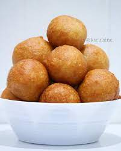

Puff Puff

Puff Puff is a delicious fried dough snack, commmonly eaten in many African
countries (often known by different names!)
1 hr 20 min
Ingredients
-
2 cups Flour
-
1 1/4 cups Water
-
2 tsps Yeast
-
1 tsp Nutmeg
-
1/8 tsp Salt
-
1/4 cup Sugar
-
Oil for Deep Frying
Instructions
-
Mix half a cup of warm water, 1 tsp of sugar, and yeast in a bowl. Cover
with a lid and set aside for about 4-6 minutes.
-
In another bowl, mix the dry ingredients (flour, sugar, salt, and nutmeg)
-
Pour proofed yeast and one cup of water with the dry ingredients, mix
until batter is lump free.
-
Cover dough and allow to rise for 1 hour.
-
Preheat oil in a pan deep and wide enough to 360 F.
-
Scoop 1/4 tbsp of dough and drop into the oil
-
Fry both sides until golden brown.
-
Drain on a paper towel. Allow to rest.
Yummy! Enjoy!
Return to Main Page